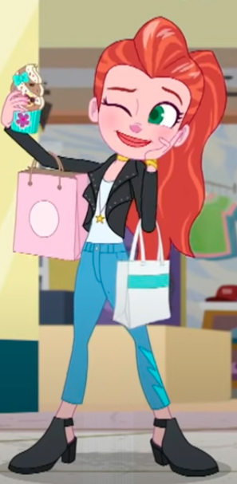

Relevamiento
En esta sección se presenta la parte principal y más importante del proceso, ya que es la investigación del personaje llamada Lila Draper, donde se encuentran los datos del personaje y serie a la cual pertenece, un video de presentación y una galería de imágenes.
Para poder ver el archivo con la investigación completa, hacé click en PDF, allí encontrarás todo lo que necesitás saber sobre este gran personaje. A continuación te dejamos algunos detalles para que la puedas conocer un poco más:
Para comenzar, tenemos la personalidad de Lila. Podemos decir que es perfeccionista, dramática, carismática, excéntrica y soñadora. Siempre se preocupa por el look de sus amigas, por lo que ellas la apodan como su consejera de moda. Ama la moda y es estilista. Tiene un temperamento un tanto miedoso frente a nuevas aventuras, aunque siempre encuentra soluciones rápidas y es comprensiva con sus amigas Polly y Shani.
Por otro lado podemos describir su aspecto, Lila es elegante, refinada y siempre está a la moda. Es una chica de tez blanca, pelirroja y de ojos verdes. Por lo general lleva un peinado de cola de caballo y un jopo. Algo muy característico de este personaje es que siempre, no importa qué lleve puesto, se coloca accesorios, como bolsos, pulceras y collares.
Lila Draper pertenece a la serie Polly Pocket de la productora televisiva Discovery Kids. Lila es una estilista de moda muy popular y una de las mejores amigas de Polly junto con Shani.
En cada una de las pequeñas grandes aventuras, siempre encuentra soluciones rápidas cuando se necesitan y con el accesorio correcto, encuentra su poder de estar siepre a la moda. Además de elegir los outfits de sus amigas para que estén en su mejor versión.
Por último, te dejamos un video en el cual Lila se presenta y te da algunos consejos sobre moda.
Video de presentación
Información importante
Para cerrar esta sección de información sobre el relevamiento, te dejamos el link al sitio web de Lila en la cual se presenta como personaje y se brindan sus características principales, para dirigirte a dicha página, haz click en la siguiente imagen:
